Learn English in chunks — from sentences you actually wanted to say.

Vocabulary apps teach words you'll never use. Chunks starts from the sentence you just failed to say: type it in Chinese, get the natural English back, and the reusable phrases inside it become your flashcards — automatically.
One Claude call per sentence returns a natural translation plus 1–4 reusable phrases, each saved as a card with its Chinese meaning and an example. If nothing is worth extracting, the whole sentence becomes the card.
The PWA runs a deliberately simplified SM-2 with three grades. The iOS app runs full FSRS with a retrievability-sorted queue — and old SM-2 cards migrate into FSRS state instead of being reset. Swipes map to grades, so two gestures drive a four-grade algorithm.
Cards live on the device and sync through a Cloudflare Worker to D1: last-write-wins by timestamp, tombstones for deletes, 500 cards per batch — and the server enforces LWW again in its upsert, so a stale device can never clobber newer state.
The Worker holds the API keys server-side and proxies both Claude and DeepSeek. The iOS app picks the provider by device region — mainland devices get DeepSeek — because the target is the China App Store.
A zero-build PWA and a SwiftUI iOS app share one Cloudflare Worker that does exactly three jobs: proxy the AI providers, guard the keys, and sync cards to D1. Tap a node to see why.
Click on any block in the diagram to see what it does and why I picked it.
One user, multiple devices — the odds of editing the same card on two devices at once are tiny. LWW is three lines of merge code on each client plus one WHERE clause on the server. I accepted losing one side in that rare race, and skipped vector clocks entirely.
Sync pulls rows where updated_at is newer than the cursor. A hard delete produces no row — the other device would never find out. So deletion is a tombstone flag plus a timestamp bump, and the UI filters instead of the store. The cost: every query must exclude tombstones, forever.
Cards used to get an automatic scene tag. In real use the labels bent to sentence emotion — a neutral phrase tagged as 'worry' because the sentence felt anxious — and I found myself searching, never browsing by scene. Cut it from the iOS rewrite, and wrote a do-not-rebuild rule into the project doc.